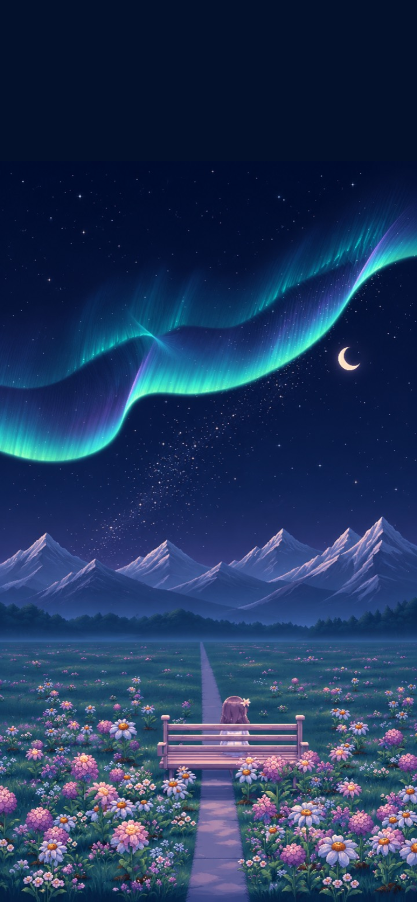
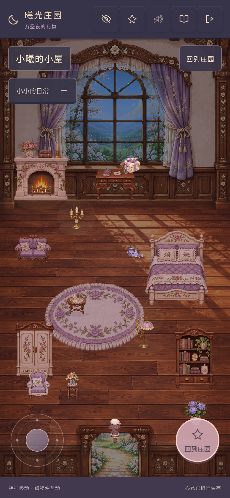

极光花海：原画就是游戏
直接使用上传图片，保留青紫极光、山脉、花海和画中的一个女孩。下方是同屏原图、真实Phaser画面与动态运行画面；左右滑动比较，点图片可查看原尺寸。截图没有用概念图替代。
原始附件实际为720×1280 JPEG，未凭空生成更大“高清PNG”。默认全屏只裁外围，人物、长椅、月亮和主要山峰保留；菜单中的“看完整原画”可以显示全部边缘。
390像素宽手机视口
375像素宽手机视口
真实运行的光感变化
视频来自实际浏览器录屏。光只沿原有帘幕缓缓变化，山峦保持稳定。少量原有星星闪烁，两小簇前景花轻摆；没有另一条极光或第二个人物覆盖原画。
| 构图 | 相同比例绘制；全屏安全裁边和完整构图两种模式均实际可用。 |
|---|
| 色彩 | 无整图调色或雾层。静止导出的720×1280 PNG与源图解码RGB逐像素相同。 |
|---|
| 花朵密度 | 直接保留原图花海，没有用重复花朵重新铺设；只分离两小块近景。 |
|---|
| 山峦轮廓 | 原图的山脊、纹理和远近色彩保持不动，没有低分辨率多边形替代。 |
|---|
| 极光细节 | 原图光丝及折叠形状保留，六块透明原像素光感层做轻微亮度流动。 |
|---|
| 人物比例 | 画中女孩与长椅原样保留；本阶段固定坐姿，不叠加换装或行走角色。 |
|---|
完整原画模式

返回庄园后仍然可玩
此前七套服装、进出小屋的人物统一修复包含在这个预览中。下面是完整断网后进入小屋的真实画面。

Chromium/WebKit：390×844、375×667、430×932触摸视口；111项Node测试通过。完整离线缓存154项、31,067,360字节，断网关闭浏览器后重开、导出照片、返回及存档验证通过。未进行实体iPhone的长期帧率测试；原图分辨率仍是清晰度上限。正式版及其他预览没有覆盖。